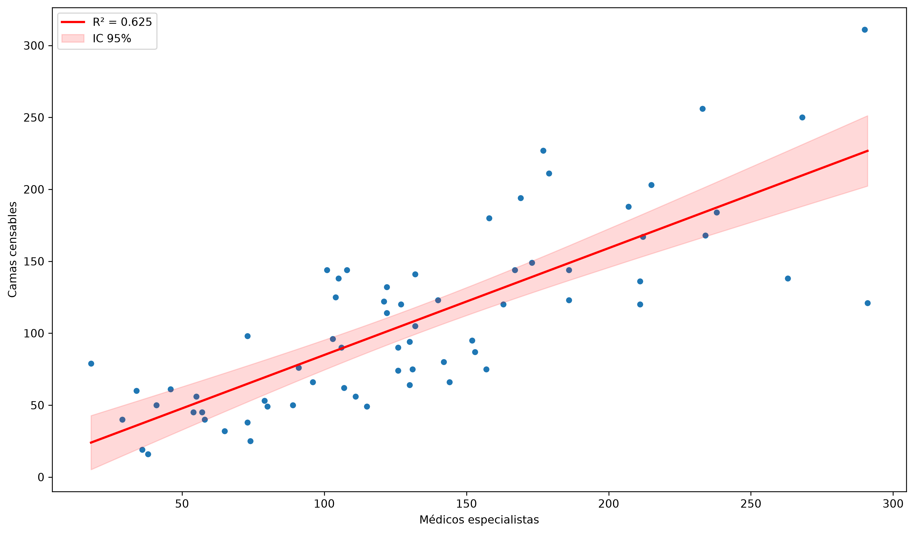
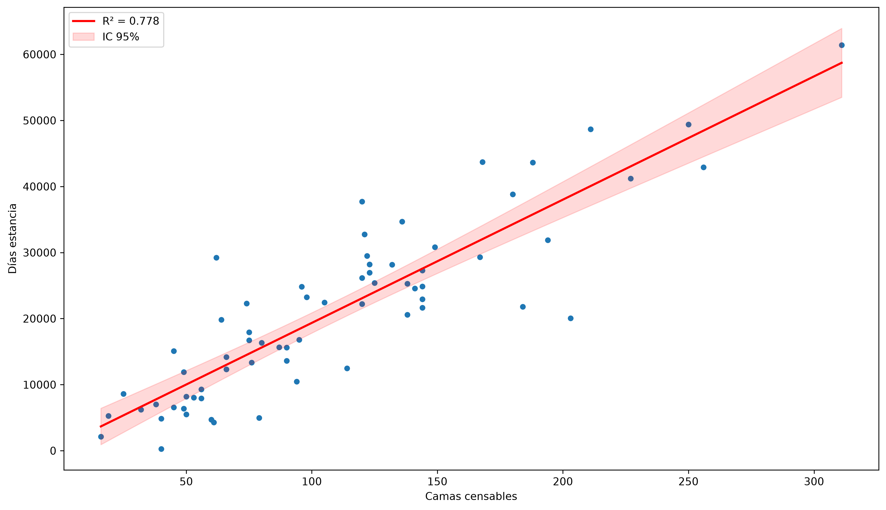
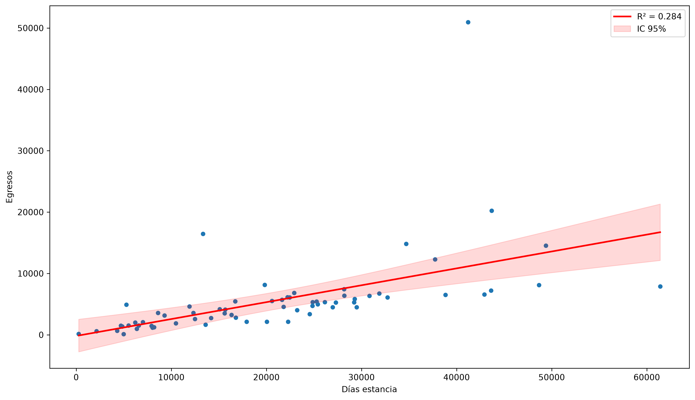
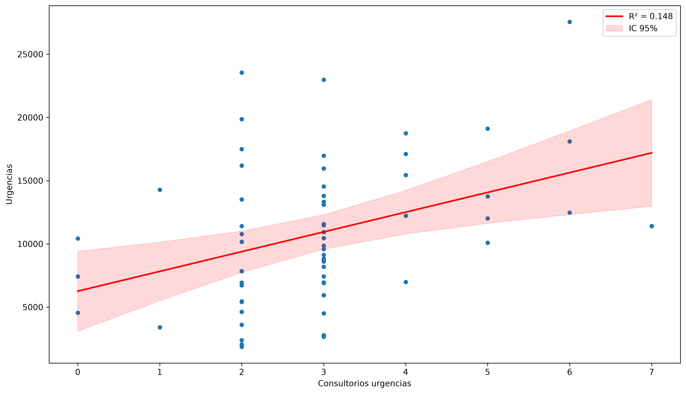
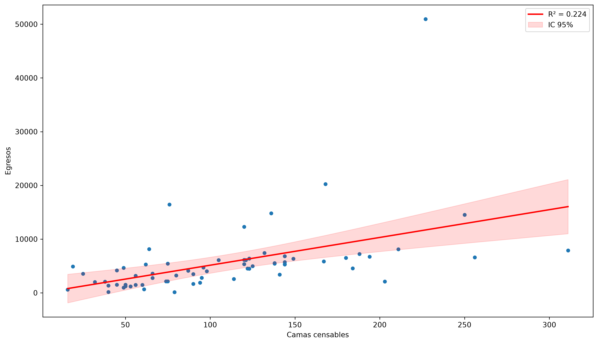
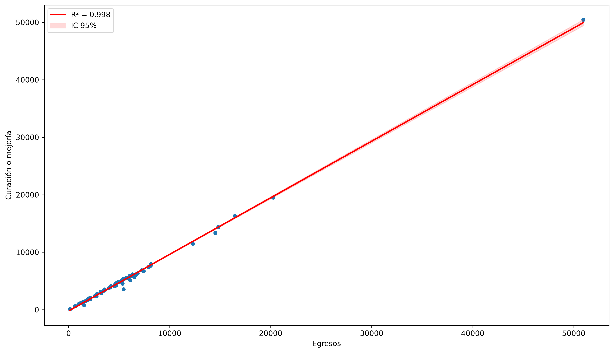
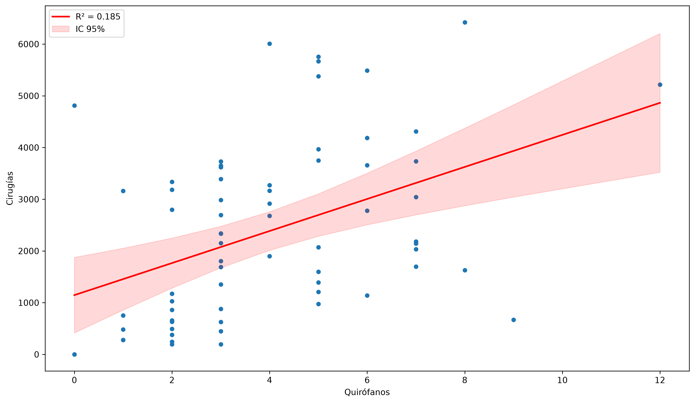
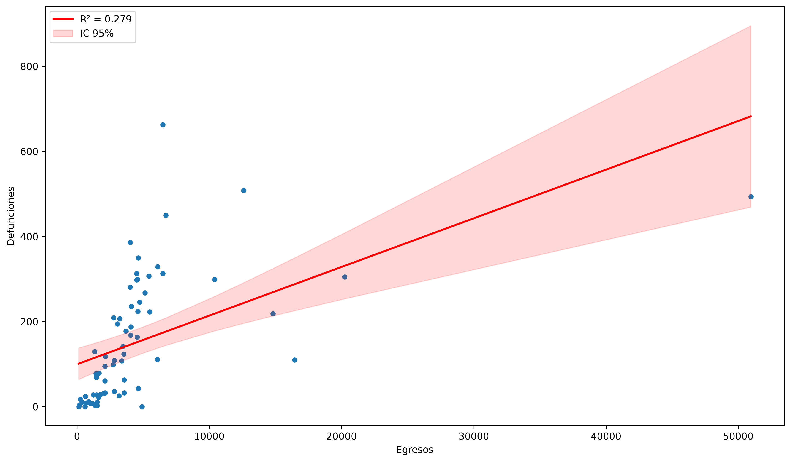

Datos de unidades de salud del IMSS Bienestar
Reporte de indicadores de unidades de tercer nivel
5 de octubre de 2026
Luis
M. González

Indicadores de atención a la salud
El cálculo de los indicadores estratégicos para evaluar el componente de atención en unidades de salud, fueron propuestos por (Servicios de Salud IMSS Bienestar, 2025).
Con las bases de datos compartidas por
DGIS, podemos calcular únicamente los
indicadores del 75 al 81 y el 84
El cálculo de los indicadores fue realizado para el siguiente rango de fechas:
- Fecha inicial: 2026-01-01
- Fecha final: 2026-09-30
- Nota.-
-
Quedan excluidas las siguientes
CLUESpor no haber sido transferidas al IMSS Bienestar:
MCIMB012440: Hospital para el Niño IMIEMMCIMB012452: Centro de Especialidades Odontológicas IMIEMMCIMB012464: Hospital de Ginecología y Obstetricia IMIEMMCIMB012283: Hospital Regional de alta Especialidad de Zumpango
Indicador 75. Razón de personal médico por cama
ATN-07
Fuente de datos:
- Catálogo de CLUES, (Secretaría de Salud - DGIS, 23 de septiembre de 2026)
- SINERHIAS, (Secretaría de Salud - DGIS, 14 de agosto de 2026)
Descripción
Estima el número de camas disponibles por médicos activos.
Proporciona una visión sobre la disponibilidad de médicos en relación al número de camas censables, en unidades hospitalarias del IMSS Bienestar.
Cálculo
\[ Indicador_{75} = \frac{m_{e}}{c_{c}} \]
Donde:
\(m_{e} =\) Total de médicos especialistas registrados en unidades del IMB
\(c_{c}=\) Total de camas censables
Calificaciones
| Calificación | Rango |
|---|---|
| Óptimo | 0.6 – 0.8 |
| Esperado | 0.4 – 0.59 |
| Regular | 0.2 – 0.39 |
| Crítico | < 0.2 |
Resultado del IMSS Bienestar
| Institución | Médicos especialistas | Camas censables | Indicador 75 | Calificación |
|---|---|---|---|---|
| IMB | 8,864 | 7,293 | 1.22 | Regular * |
Resultados por entidades
| Entidad | Médicos especialistas | Camas censables | Indicador 75 | Calificación |
|---|---|---|---|---|
| Baja California Sur | 104 | 125 | 0.83 | Regular * |
| Campeche | 169 | 194 | 0.87 | Regular * |
| Chiapas | 474 | 301 | 1.57 | Regular * |
| Ciudad de México | 1,059 | 818 | 1.29 | Regular * |
| Colima | 236 | 152 | 1.55 | Regular * |
| Guanajuato | 238 | 184 | 1.29 | Regular * |
| Guerrero | 109 | 117 | 0.93 | Regular * |
| Hidalgo | 212 | 167 | 1.27 | Regular * |
| México | 1,030 | 1,122 | 0.92 | Regular * |
| Michoacán | 431 | 370 | 1.16 | Regular * |
| Morelos | 73 | 38 | 1.92 | Regular * |
| Nayarit | 121 | 122 | 0.99 | Regular * |
| Oaxaca | 259 | 115 | 2.25 | Regular * |
| Puebla | 455 | 383 | 1.19 | Regular * |
| San Luis Potosí | 387 | 445 | 0.87 | Regular * |
| Sinaloa | 823 | 525 | 1.57 | Regular * |
| Sonora | 407 | 317 | 1.28 | Regular * |
| Tabasco | 668 | 595 | 1.12 | Regular * |
| Tamaulipas | 558 | 375 | 1.49 | Regular * |
| Tlaxcala | 200 | 115 | 1.74 | Regular * |
| Veracruz | 588 | 575 | 1.02 | Regular * |
| Yucatán | 263 | 138 | 1.91 | Regular * |
Gráfica de dispersión con línea de regresión

Indicador 76. Ocupación hospitalaria
ATN-08
Fuente de datos:
Catálogo de CLUES, (Secretaría de Salud - DGIS, 23 de septiembre de 2026)
Egresos hospitalarios, (Secretaría de Salud - DGIS, 05 de octubre de 2026a)
SINERHIAS, (Secretaría de Salud - DGIS, 14 de agosto de 2026)
Descripción
Mide el grado de utilización de cama censables por día, a partir de los días estancia de los pacientes internados.
Proporciona una visión sobre la utilización de la capacidad hospitalaria, en unidades de salud del IMSS Bienestar.
Cálculo
\[ Indicador_{76} = \frac{d_{e}}{c_{c} \cdot \Delta t} \times 100 \]
Donde:
\(d_{e} =\) Total de días estancia de egresos hospitalarios durante periodo de análisis
\(c_{c} =\) Total de camas censables
\(\Delta t =\) Número de días del periodo de análisis
Calificaciones
| Calificación | Rango |
|---|---|
| Óptimo | 80.0 – 90.0 |
| Esperado | 70.0 – 79.9 |
| Regular | 50.0 – 69.9 o > 90.0 |
| Crítico | < 50.0 |
Resultado del IMSS Bienestar
| Institución | Días estancia | Camas censables | Indicador 76 | Calificación |
|---|---|---|---|---|
| IMB | 1,406,846 | 7,293 | 70.7 | Esperado |
Resultados por entidades
| Entidad | Días estancia | Camas censables | Indicador 76 | Calificación |
|---|---|---|---|---|
| Baja California Sur | 25,403 | 125 | 74.4 | Esperado |
| Campeche | 31,872 | 194 | 60.2 | Regular |
| Chiapas | 66,211 | 301 | 80.6 | Óptimo |
| Ciudad de México | 115,483 | 818 | 51.7 | Regular |
| Colima | 22,801 | 152 | 54.9 | Regular |
| Guanajuato | 21,812 | 184 | 43.4 | Crítico |
| Guerrero | 28,505 | 117 | 89.2 | Óptimo |
| Hidalgo | 29,293 | 167 | 64.3 | Regular |
| México | 213,248 | 1,122 | 69.6 | Regular |
| Michoacán | 71,598 | 370 | 70.9 | Esperado |
| Morelos | 7,016 | 38 | 67.6 | Regular |
| Nayarit | 29,484 | 122 | 88.5 | Óptimo |
| Oaxaca | 26,097 | 115 | 83.1 | Óptimo |
| Puebla | 88,873 | 383 | 85.0 | Óptimo |
| San Luis Potosí | 94,085 | 445 | 77.4 | Esperado |
| Sinaloa | 104,871 | 525 | 73.2 | Esperado |
| Sonora | 74,531 | 317 | 86.1 | Óptimo |
| Tabasco | 126,188 | 595 | 77.7 | Esperado |
| Tamaulipas | 61,626 | 375 | 60.2 | Regular |
| Tlaxcala | 24,202 | 115 | 77.1 | Esperado |
| Veracruz | 118,368 | 575 | 75.4 | Esperado |
| Yucatán | 25,279 | 138 | 67.1 | Regular |
Gráfica de dispersión con línea de regresión

Indicador 77. Promedio de estancia hospitalaria
ATN-09
Fuente de datos:
Catálogo de CLUES, (Secretaría de Salud - DGIS, 23 de septiembre de 2026)
Egresos hospitalarios, (Secretaría de Salud - DGIS, 05 de octubre de 2026a)
SINERHIAS, (Secretaría de Salud - DGIS, 14 de agosto de 2026)
Descripción
Exhibe número promedio de días que un paciente permanece internado en el hospital.
Proporciona una visión sobre la duración de las estancias hospitalarias y puede reflejar la eficiencia del cuidado médico y la complejidad de los casos atendidos, en hospitales del IMSS Bienestar.
Cálculo
\[ Indicador_{77} = \frac{d_{e}}{e_{h}} \]
Donde:
\(d_{e} =\) Total de días estancia de egresos hospitalarios durante periodo de análisis
\(e_{h} =\) Total de egresos hospitalarios
Calificaciones
| Calificación | Rango |
|---|---|
| Óptimo | 3.96 – 5.85 |
| Esperado | 5.86 – 6.42 |
| Regular | > 6.42 |
| Crítico | < 3.96 |
Resultado del IMSS Bienestar
| Institución | Dias estancia | Egresos | Indicador 77 | Calificación |
|---|---|---|---|---|
| IMB | 1,406,846 | 374,843 | 3.75 | Crítico |
Resultados por entidades
| Entidad | Dias estancia | Egresos | Indicador 77 | Calificación |
|---|---|---|---|---|
| Baja California Sur | 25,403 | 4,973 | 5.11 | Óptimo |
| Campeche | 31,872 | 6,720 | 4.74 | Óptimo |
| Chiapas | 66,211 | 18,583 | 3.56 | Crítico |
| Ciudad de México | 115,483 | 24,526 | 4.71 | Óptimo |
| Colima | 22,801 | 5,389 | 4.23 | Óptimo |
| Guanajuato | 21,812 | 4,551 | 4.79 | Óptimo |
| Guerrero | 28,505 | 8,914 | 3.20 | Crítico |
| Hidalgo | 29,293 | 5,843 | 5.01 | Óptimo |
| México | 213,248 | 45,164 | 4.72 | Óptimo |
| Michoacán | 71,598 | 20,669 | 3.46 | Crítico |
| Morelos | 7,016 | 2,057 | 3.41 | Crítico |
| Nayarit | 29,484 | 4,512 | 6.53 | Regular |
| Oaxaca | 26,097 | 7,387 | 3.53 | Crítico |
| Puebla | 88,873 | 14,212 | 6.25 | Esperado |
| San Luis Potosí | 94,085 | 18,357 | 5.13 | Óptimo |
| Sinaloa | 104,871 | 22,260 | 4.71 | Óptimo |
| Sonora | 74,531 | 26,574 | 2.80 | Crítico |
| Tabasco | 126,188 | 77,576 | 1.63 | Crítico |
| Tamaulipas | 61,626 | 12,510 | 4.93 | Óptimo |
| Tlaxcala | 24,202 | 7,062 | 3.43 | Crítico |
| Veracruz | 118,368 | 31,565 | 3.75 | Crítico |
| Yucatán | 25,279 | 5,439 | 4.65 | Óptimo |
Gráfica de dispersión con línea de regresión

Indicador 78. Consulta de urgencias por consultorio
ATN-10
Fuente de datos:
Catálogo de CLUES, (Secretaría de Salud - DGIS, 23 de septiembre de 2026)
Urgencias, (Secretaría de Salud - DGIS, 05 de octubre de 2026b)
SINERHIAS, (Secretaría de Salud - DGIS, 14 de agosto de 2026)
Descripción
Muestra el número de atenciones (consultas) de urgencia médica en promedio por consultorio disponible, de manera mensual en hospitales del IMSS Bienestar.
Cálculo
\[ Indicador_{78} = \frac{u_{m}}{c_{u} \cdot \Delta t} \]
Donde:
\(u_{m} =\) Total de atenciones en servicio de urgencias médicas
\(c_{u} =\) Total de consultorios registrados para el servicio de urgencia médica
\(\Delta t =\) Número de días del periodo de análisis
Calificaciones
| Calificación | Rango |
|---|---|
| Óptimo | 15 – 25 |
| Esperado | 10 – 14 o 26 – 30 |
| Regular | 5 - 9 o > 30 |
| Crítico | < 5 |
Resultado del IMSS Bienestar
| Institución | Urgencias | Consultorios urgencias | Indicador 78 | Calificación |
|---|---|---|---|---|
| IMB | 659,985 | 184 | 13.1 | Esperado |
Resultados por entidades
| Entidad | Urgencias | Consultorios urgencias | Indicador 78 | Calificación |
|---|---|---|---|---|
| Baja California Sur | 6,902 | 3 | 8.4 | Regular |
| Campeche | 13,518 | 2 | 24.8 | Óptimo |
| Chiapas | 13,096 | 5 | 9.6 | Regular |
| Ciudad de México | 116,732 | 29 | 14.7 | Esperado |
| Colima | 22,430 | 7 | 11.7 | Esperado |
| Guanajuato | 4,620 | 2 | 8.5 | Regular |
| Guerrero | 12,023 | 5 | 8.8 | Regular |
| Hidalgo | 11,397 | 7 | 6.0 | Regular |
| México | 116,183 | 21 | 20.3 | Óptimo |
| Michoacán | 14,332 | 4 | 13.1 | Esperado |
| Morelos | 9,861 | 3 | 12.0 | Esperado |
| Nayarit | 11,396 | 2 | 20.9 | Óptimo |
| Oaxaca | 2,378 | 4 | 2.2 | Crítico |
| Puebla | 28,647 | 14 | 7.5 | Regular |
| San Luis Potosí | 29,616 | 10 | 10.8 | Esperado |
| Sinaloa | 57,726 | 18 | 11.7 | Esperado |
| Sonora | 50,541 | 9 | 20.6 | Óptimo |
| Tabasco | 63,985 | 14 | 16.7 | Óptimo |
| Tamaulipas | 21,518 | 10 | 7.9 | Regular |
| Tlaxcala | 16,031 | 3 | 19.6 | Óptimo |
| Veracruz | 30,325 | 10 | 11.1 | Esperado |
| Yucatán | 6,728 | 2 | 12.3 | Esperado |
Gráfica de dispersión con línea de regresión

Indicador 79. Índice de rotación
ATN-11
Fuente de datos:
Catálogo de CLUES, (Secretaría de Salud - DGIS, 23 de septiembre de 2026)
Egresos hospitalarios, (Secretaría de Salud - DGIS, 05 de octubre de 2026a)
SINERHIAS, (Secretaría de Salud - DGIS, 14 de agosto de 2026)
Descripción
Mide la Proporción de pacientes hospitalizados por cama disponible por mes.
Proporciona una visión sobre la utilización de la capacidad hospitalaria, en unidades de salud del IMSS Bienestar.
Cálculo
\[ Indicador_{79} = \frac{e_{h}}{c_{c} \cdot \Delta t} \]
Donde:
\(e_{h}=\) Total de egresos hospitalarios
\(c_{c} =\) Total de camas censables
\(\Delta t =\) Número de días del periodo de análisis
Calificaciones
| Calificación | Rango |
|---|---|
| Óptimo | 3.91 – 5.1 |
| Esperado | 3.0 – 3.90 o 5.11 – 6.0 |
| Regular | 2.0 – 2.9 |
| Crítico | < 2.0 |
Resultado del IMSS Bienestar
| Institución | Egresos | Camas censables | Indicador 79 | Calificación |
|---|---|---|---|---|
| IMB | 374,843 | 7,293 | 0.19 | Crítico |
Resultados por entidades
| Entidad | Egresos | Camas censables | Indicador 79 | Calificación |
|---|---|---|---|---|
| Baja California Sur | 4,973 | 125 | 0.15 | Crítico |
| Campeche | 6,720 | 194 | 0.13 | Crítico |
| Chiapas | 18,583 | 301 | 0.23 | Crítico |
| Ciudad de México | 24,526 | 818 | 0.11 | Crítico |
| Colima | 5,389 | 152 | 0.13 | Crítico |
| Guanajuato | 4,551 | 184 | 0.09 | Crítico |
| Guerrero | 8,914 | 117 | 0.28 | Crítico |
| Hidalgo | 5,843 | 167 | 0.13 | Crítico |
| México | 45,164 | 1,122 | 0.15 | Crítico |
| Michoacán | 20,669 | 370 | 0.20 | Crítico |
| Morelos | 2,057 | 38 | 0.20 | Crítico |
| Nayarit | 4,512 | 122 | 0.14 | Crítico |
| Oaxaca | 7,387 | 115 | 0.24 | Crítico |
| Puebla | 14,212 | 383 | 0.14 | Crítico |
| San Luis Potosí | 18,357 | 445 | 0.15 | Crítico |
| Sinaloa | 22,260 | 525 | 0.16 | Crítico |
| Sonora | 26,574 | 317 | 0.31 | Crítico |
| Tabasco | 77,576 | 595 | 0.48 | Crítico |
| Tamaulipas | 12,510 | 375 | 0.12 | Crítico |
| Tlaxcala | 7,062 | 115 | 0.22 | Crítico |
| Veracruz | 31,565 | 575 | 0.20 | Crítico |
| Yucatán | 5,439 | 138 | 0.14 | Crítico |
Gráfica de dispersión con línea de regresión

Indicador 80. Proporción de egresos por mejoría
ATN-12
Fuente de datos:
- Catálogo de CLUES, (Secretaría de Salud - DGIS, 23 de septiembre de 2026)
- Egresos hospitalarios, (Secretaría de Salud - DGIS, 05 de octubre de 2026a)
Descripción
Estima Porcentaje de egresos hospitalarios por motivo de curación o mejoría en unidades médicas del IMSS Bienestar dentro un periodo determinado.
Se relaciona con la eficacia en los tratamientos y la calidad de la atención.
Cálculo
\[ Indicador_{80} = \frac{e_{h_{m}}}{e_{h}} \times 100 \]
Donde:
\(e_{h}=\) Total de egresos hospitalarios
\(e_{h_{m}} =\) Número de egresos hospitalarios por motivo de curación o mejoría
Calificaciones
| Calificación | Rango |
|---|---|
| Óptimo | 95 – 100 |
| Esperado | 90 – 94.9 |
| Regular | 80 – 89.9 |
| Crítico | < 80 |
Resultado del IMSS Bienestar
| Institución | Curación o mejoría | Egresos | Indicador 80 | Calificación |
|---|---|---|---|---|
| IMB | 354,497 | 374,843 | 94.57 | Esperado |
Resultados por entidades
| Entidad | Curación o mejoría | Egresos | Indicador 80 | Calificación |
|---|---|---|---|---|
| Baja California Sur | 4,776 | 4,973 | 96.04 | Óptimo |
| Campeche | 6,227 | 6,720 | 92.66 | Esperado |
| Chiapas | 17,973 | 18,583 | 96.72 | Óptimo |
| Ciudad de México | 22,449 | 24,526 | 91.53 | Esperado |
| Colima | 4,993 | 5,389 | 92.65 | Esperado |
| Guanajuato | 4,178 | 4,551 | 91.80 | Esperado |
| Guerrero | 8,696 | 8,914 | 97.55 | Óptimo |
| Hidalgo | 5,581 | 5,843 | 95.52 | Óptimo |
| México | 42,043 | 45,164 | 93.09 | Esperado |
| Michoacán | 19,180 | 20,669 | 92.80 | Esperado |
| Morelos | 2,002 | 2,057 | 97.33 | Óptimo |
| Nayarit | 4,109 | 4,512 | 91.07 | Esperado |
| Oaxaca | 6,981 | 7,387 | 94.50 | Esperado |
| Puebla | 13,292 | 14,212 | 93.53 | Esperado |
| San Luis Potosí | 17,295 | 18,357 | 94.21 | Esperado |
| Sinaloa | 20,172 | 22,260 | 90.62 | Esperado |
| Sonora | 25,675 | 26,574 | 96.62 | Óptimo |
| Tabasco | 75,925 | 77,576 | 97.87 | Óptimo |
| Tamaulipas | 11,935 | 12,510 | 95.40 | Óptimo |
| Tlaxcala | 6,848 | 7,062 | 96.97 | Óptimo |
| Veracruz | 30,604 | 31,565 | 96.96 | Óptimo |
| Yucatán | 3,563 | 5,439 | 65.51 | Crítico |
Gráfica de dispersión con línea de regresión

Indicador 81. Promedio diarios de eventos quirúrgicos por quirófano
ATN-13
Fuente de datos:
Catálogo de CLUES, (Secretaría de Salud - DGIS, 23 de septiembre de 2026)
Egresos hospitalarios, (Secretaría de Salud - DGIS, 05 de octubre de 2026a)
SINERHIAS, (Secretaría de Salud - DGIS, 14 de agosto de 2026)
Descripción
Expresa el número promedio de cirugías realizadas por quirófanos habilitados durante un mes en hospitales del IMSS Bienestar.
Mide el grado de utilización de quirófanos en cirugías.
Cálculo
\[ Indicador_{81} = \frac{i_{q}}{s_{o} \cdot \Delta t} \]
Donde:
\(i_{q} =\) Número de cirugías realizadas por mes calendario
\(s_{o} =\) Número de quirófanos habilitados en unidades del IMB
\(\Delta t =\) Número de días del periodo de análisis
Calificaciones
| Calificación | Rango |
|---|---|
| Óptimo | 2.0 – 3.5 |
| Esperado | 1.0 – 1.9 o 3.6 – 4.0 |
| Regular | 0.5 – 0.9 o > 4.0 |
| Crítico | < 0.5 |
Resultado del IMSS Bienestar
| Institución | Cirugías | Quirófanos | Indicador 81 | Calificación |
|---|---|---|---|---|
| IMB | 160,672 | 267 | 2.2 | Óptimo |
Resultados por entidades
| Entidad | Cirugías | Quirófanos | Indicador 81 | Calificación |
|---|---|---|---|---|
| Baja California Sur | 2,334 | 3 | 2.8 | Óptimo |
| Campeche | 3,749 | 5 | 2.7 | Óptimo |
| Chiapas | 6,962 | 14 | 1.8 | Esperado |
| Ciudad de México | 10,607 | 29 | 1.3 | Esperado |
| Colima | 6,175 | 7 | 3.2 | Óptimo |
| Guanajuato | 2,182 | 7 | 1.1 | Esperado |
| Guerrero | 3,444 | 5 | 2.5 | Óptimo |
| Hidalgo | 6,007 | 4 | 5.5 | Regular * |
| México | 24,246 | 28 | 3.2 | Óptimo |
| Michoacán | 7,355 | 10 | 2.7 | Óptimo |
| Morelos | 1,208 | 5 | 0.9 | Regular |
| Nayarit | 3,966 | 5 | 2.9 | Óptimo |
| Oaxaca | 2,271 | 8 | 1.0 | Esperado |
| Puebla | 13,270 | 21 | 2.3 | Óptimo |
| San Luis Potosí | 11,881 | 16 | 2.7 | Óptimo |
| Sinaloa | 12,152 | 15 | 3.0 | Óptimo |
| Sonora | 5,823 | 13 | 1.6 | Esperado |
| Tabasco | 14,686 | 23 | 2.3 | Óptimo |
| Tamaulipas | 6,456 | 14 | 1.7 | Esperado |
| Tlaxcala | 3,321 | 6 | 2.0 | Óptimo |
| Veracruz | 10,881 | 22 | 1.8 | Esperado |
| Yucatán | 1,696 | 7 | 0.9 | Regular |
Gráfica de dispersión con línea de regresión

Indicador 84. Mortalidad Hospitalaria
ATN-16
Fuente de datos:
- Catálogo de CLUES, (Secretaría de Salud - DGIS, 23 de septiembre de 2026)
- Egresos hospitalarios, (Secretaría de Salud - DGIS, 05 de octubre de 2026a)
Descripción
Muestra la relación entre el número de egresos por defunción y el total de egresos hospitalarios, excluyendo los egresos relacionados con la atención obstétrica
Cálculo
\[ Indicador_{84} = \frac{e_{h_{d}}}{e_{h}} \cdot 1000 \]
Donde:
\(e_{h_{d}} =\) Número de egresos por defunción ocurridos de manera intrahospitalaria
\(e_{h}=\) Total de egresos hospitalarios
En ambas variables, se excluyen los egresos relacionados con la atención obstétrica
Calificaciones
| Calificación | Rango |
|---|---|
| Óptimo | \(\leq\) 16.9 |
| Esperado | 17.0 – 23.9 |
| Regular | 24.0 – 30.9 |
| Crítico | \(\geq\) 31.0 |
Resultado del IMSS Bienestar
| Institución | Defunciones | Egresos | Indicador 84 | Calificación |
|---|---|---|---|---|
| IMB | 10,237 | 309,652 | 33.1 | Crítico |
Resultados por entidades
| Entidad | Defunciones | Egresos | Indicador 84 | Calificación |
|---|---|---|---|---|
| Baja California Sur | 188 | 4,065 | 46.2 | Crítico |
| Campeche | 246 | 4,735 | 52.0 | Crítico |
| Chiapas | 331 | 18,583 | 17.8 | Esperado |
| Ciudad de México | 451 | 19,297 | 23.4 | Esperado |
| Colima | 221 | 3,742 | 59.1 | Crítico |
| Guanajuato | 164 | 4,549 | 36.1 | Crítico |
| Guerrero | 99 | 7,624 | 13.0 | Óptimo |
| Hidalgo | 224 | 4,591 | 48.8 | Crítico |
| México | 1,933 | 30,381 | 63.6 | Crítico |
| Michoacán | 632 | 16,138 | 39.2 | Crítico |
| Morelos | 32 | 2,056 | 15.6 | Óptimo |
| Nayarit | 313 | 4,510 | 69.4 | Crítico |
| Oaxaca | 252 | 7,383 | 34.1 | Crítico |
| Puebla | 536 | 10,906 | 49.1 | Crítico |
| San Luis Potosí | 623 | 12,284 | 50.7 | Crítico |
| Sinaloa | 903 | 15,874 | 56.9 | Crítico |
| Sonora | 368 | 23,795 | 15.5 | Óptimo |
| Tabasco | 965 | 69,649 | 13.9 | Óptimo |
| Tamaulipas | 479 | 9,393 | 51.0 | Crítico |
| Tlaxcala | 142 | 6,378 | 22.3 | Esperado |
| Veracruz | 828 | 28,280 | 29.3 | Regular |
| Yucatán | 307 | 5,439 | 56.4 | Crítico |
Gráfica de dispersión con línea de regresión

Descargas
Descargar Archivo
PDF